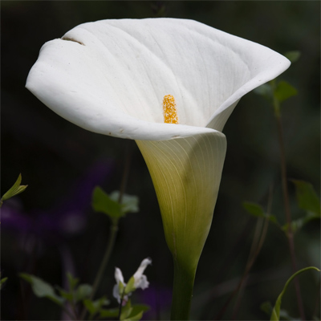

Cala Lily

Characteristics:
- Full sun
- Moderate watering
- Summer bloom
- Height: 1-2ft
- Growth rate: Medium
- Maintenance Level: Low
Price: $15.00
Description:
The Calla Lily, a perennial plant native to southern Africa, is recognized for its elegant, trumpet-shaped flowers and glossy, arrow-shaped leaves. Its distinctive blooms, featuring a long, funnel-shaped spathe and central spadix, come in various colors like white, cream, pink, yellow, and purple. Thriving in well-draining soil and preferring partial shade, these lilies require consistent moisture and can be cultivated both indoors and outdoors. Often used in floral arrangements and weddings, their ornamental value lies in their graceful appearance, but it's important to note their toxicity to pets and humans if ingested.